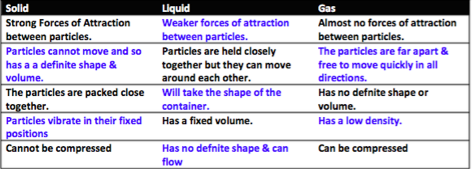
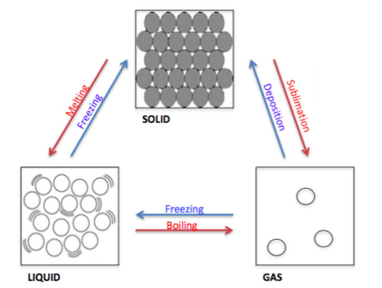
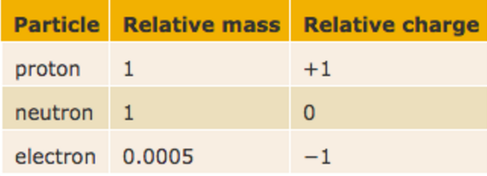
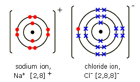
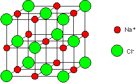
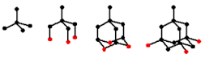
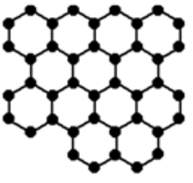

Chemistry Fact Of The Day:
Chemistry Video Of The Day:
Syllabus Points
Principles of chemistry
***Underlined points are triple***
1.1 understand the arrangement, movement and energy of the particles in each of the three states of matter: solid, liquid and gas.
1.2 understand how the interconversions of solids, liquids and gases are achieved and recall the names used for these interconversions.
1.3 explain the changes in arrangement, movement and energy of particles
In a solid, there are strong forces of attraction between the particles, meaning that they are arranged in an ordered manner. Particles cannot move around and have a definite shape and volume that cannot be compressed. However, unless the substance is cooled to absolute zero, the particles will be vibrating in their spots. As the temperature increases, the kinetic energy the particles have increases, hence the particles start vibrating faster.
When the melting point is reached, particles have enough kinetic energy to move around, and the forces of attraction between the particles are weaker (than in solids). Particles are still held closely together, but can move around to take the shape of the container. Even so, it has a fixed volume and is difficult to compress.
Once the boiling point is reached, particles overcome forces of attraction. This means that particles are far apart and move quickly (due to the high kinetic energy), taking the shape of the container. Since the particles are so far apart, they have a low density and have no definite shape or volume.
1.4 describe and explain experiments to investigate the small size of particles and their movement including:
i. Dilution of coloured solutions
Dissolve some potassium manganate in 10cm3 of water in a test tube - A purple solution should form.
Add 1ml of the solution to another 10ml of water and repeat until no colour can be seen.
As the solution becomes diluted, the particles become further apart. This shows that the particles must be very small as it takes many tries for no colour to be seen.
ii. Diffusion experiments
IN GAS:
Place 2 cotton wool (one dipped in Ammonia and the other in Hydrochloric acid) on opposite ends of a gas tube. A white ring (ammonium chloride) should form towards the end with the HCl because ammonia is less dense and travels faster through the air.
IN LIQUIDS:
Place a crystal of potassium permangenate in the water. The coloured particles split off from the crystal and move through the solution until it is evenly spread out. This turns the solution from colourless to purple.
1.5 understand the terms atom and molecule
Atom: Smallest particle of an element
- Atoms of same element have the same atomic number
Molecule: 2 or more chemically combined atoms
- All molecules are COVALENTLY BONDED
1.6 understand the differences between elements, compounds and mixtures
Element: A substance that cannot be broken down by chemical means.
Compound: Two or more elements chemically combined, to which they are not all the same.
Mixture: Two or more substances that are not chemically combined.
1.7 describe experimental techniques for the separation of mixtures, including simple distillation, fractional distillation, filtration, crystallization and paper chromatography.
Simple distillation: One substance is evaporated off, to either obtain the substance or the substance dissolved in it. E.g. Obtaining salt from water.
Fractional distillation: Different substances have different boiling points, therefore, condense at difference parts of the boiling tube and collected separately. This works because temperatures get cooler the higher up the tube you go.
Filtration: When a mixture is poured through filter paper inside a funnel to separate the insoluble substance (residue) from the soluble substance (filtrate). E.g. sand for water
Crystallization: A solution is heated with an evaporation dish and bunsen burner, however, not fully, once most of the water has boiled away, the dish should be left to cool and evaporate so crystals will form.
Chromatography: Colours like inks and dyes are placed on a chromatography paper and into a solvent. The colours are then separated as the solvent travels up the paper.
1.8 explain how information from chromatograms can be used to identify the composition of a mixture
1. Using a pencil, draw a line 2cm parallel to the bottom of the paper.
2. Draw dots 0.5cm in diameter for the mixtures, ensuring that they are spaced 1cm apart.
3. Fill 1cm in height of a beaker with water.
4. Place the chromatography paper into the water, ensuring that the water is below the pencil line.
5. Hold the paper in this position until the water level rises above the dyes, and the dyes stop separating.
6. Take the paper out of the beaker of water, and allow to dry.
7. Compare the distance travelled of the dyes (Rf values) with known dyes.
1.9 understand that atoms consist of a central nucleus, composed of protons and neutrons, surrounded by electrons, orbiting in shells.
1.10 recall the relative mass and relative charge of ap proton, neutron and electron.

1.11 understand the terms atomic number, mass number, isotopes and relative atomic mass
Atomic number: number of protons.
Mass number: number of nucleons.
Isotopes: atoms with the same number of protons (and the same atomic number, hence making them the same element) and different number of neutrons (and different mass number).
Relative Atomic Mass: average atomic mass of all the isotopes of an element relative to C-12
1.12 calculate the relative atomic mass of an element from the relative abundances of its isotopes
Relative atomic mass is the average weight of an atom of an element. There is variation in the weight due to the fact that there are different isotopes with in an element. (Different isotopes have different weights as they have different numbers of neutrons.)
To calculate:
(% of isotope x its mass) + (% of isotope x its mass) ... / 100
1.13 understand that the periodic table is an arrangement of elements in order of atomic number
Remember, atomic number is the number of protons in the element.
1.14 deduce the electron configurations of the first 20 elements from their positions in the periodic table.
Same number of electrons and protons, as they are not ions, therefore, you can deduce how many electrons they have by looking at their atomic number. The first shell holds 2, second one 8, third one 8.
1.15 deduce the number of outer electrons in a main group element from its position in the periodic table.
Same as 1.14, but just subtract the electrons from all the shells other than the outer layer from total number of electrons.
1.16 calculate relative formula masses (Mr) from relative atomic mass (Ar)
Mr is the relative mass of a molecule, Ar is ther relative mass of an element.
Mr = (number of that element in the molecule x relative atomic mass) + (number of that element in the molecule x relative atomic mass)...
1.17 understand the use of the term mole to represent the amount of substance.
A mole is just a certain amount of molecules, just like having a thousand molecules. Having a mole of molecules is having 6.022x1023 of it.
1.18 understand the term mole as the Avogadro number of particles (atoms, molecules, formulae, ions or electrons) in a substance.
6.022x1023
1.19 carry out mole calculations using relative atomic mass (Ar) and relative formula mass (Mr)
Moles = mass/(relative atomic or formula mass)
n = m/Mr
1.20 understand the term molar volume of a gas and use its values (24dm3 and 24,000cm3 at room temperature and pressure (rtp) in calculations.
1 mol = 24dm3
1.21 write word equations and balanced chemical equations to represent the reactions studied in this specification.
Example of word equation: hydrogen + oxygen => water
Example of chemical equations: 2H2 + O2 => H2O
Tip: Make sure in chemical equations, the number of elements are the same on both sides.
1.22 use the state symbols: (s), (l), (g), (aq) in chemical equations to represent solids, liquids, gases and aqueous solutions respectively.
1.23 understand how the formulae of simple compounds can be obtained experimentally, including metal oxides, water and salts containing water of crystallisation
EXAMPLE: Magnesium Oxide experiment thing you most likely did in class.
Weigh empty crucible + lid
Weigh crucible + lid + magnesium
Heat using a bunsen flame, with a heat-proof mat, tripod, and clay triangle.
Quickly lift crucible quickly so oxygen gets in.
When all magnesium has been oxidised, allow the apparatus to cool.
Weigh the contents of the crucible.
Find mass of magnesium and magnesium oxide.
Subtract mass of magnesium from magnesium oxide to find the mass of oxygen.
Use n = m/Mr to find the number of moles of magnesium and oxygen, then find the empirical formula.
1.24 calculate empirical and molecular formulae from experimental data.
Change the masses found of elements in a compound into percentages, then, divide each percentage by their respective Ar and you will have the number of atoms of it in a single molecule.
EXAMPLE:
Mass of carbon = 84% Ar = 12
C = 84/12 = 7
Hydrogen mass = 16% Ar= 1
H = 16/1 = 16
=>C7H16
To find the empirical formula, we divide the molecular formula by the smallest number.
EXAMPLE:
C4H8 => CH2
1.25 calculate reacting masses using experimental data and chemical equations,
This means if you know the number of moles of element A and the number of moles of element B, you can calculate the mass of compound AB.
REMEMBER: n = m/Ar
So m = n * Ar
Apply this to each element A and B and just add up their respective masses to find the mass of compound AB.
1.26 calculate percentage yield.
(Actual yield / theoretical yield) * 100
Theoretical yield is the mass you expect to get.
Actual yield is the mass you obtain from an experiment
To work out the theoretical yield, it is useful to remember than when given an equation, such as Al2O3 => 2Al you already know the ratio of aluminium and oxygen (2:3). This tells us that every 2 moles of aluminium is required to bond with 3 moles of oxygen to make 1 mole of aluminium oxide. After which you can calculate the mass of its respective elements fairly easily (n = m / Mr)
EXAMPLE QUESTION: The mass of Al2O3 is 204g, calculate the theoretical yield of aluminium if electrolysis is applied to the compound.
n = 204/102 = 2
Therefore, we know how many moles aluminium oxide contains, so aluminium must contain 2*2 = 4 moles, as stated before.
Therefore, we can calculate the mass of aluminium: m = n * Ar = 4*27 = 108g
1.27 carry out mole calculations using volumes and molar concentrations.
mole = volume * molar concentration
1.28 describe the formation of ions by the gain or loss of electrons.
1.29 understand oxidation as the loss of electrons and reduction as the gain of electrons
OILRIG - Oxidation Is Loss, Reduction Is Gain.
1.30 recall the charges of common ions in this specification.
Nitrate NO3-
Sulfide S2-
Sulfate SO42-
Oxide O2-
Carbonate CO32-
Ammonium NH4+
1.31 deduce the charge of an ion from the electronic configuration of the atom from which the ion is formed
Easy way to work it out:
If the atom has lost electrons, it will have a positive charge, which will be the same as the number of electrons lost. e.g. lost 2 electrons, so +2 charge
If the atom has gained electrons, it will have a negative charge, which will be the same as the number of electrons gained. e.g. Gained 3 electrons, so -3 charge.
1.32 explain, using dot and cross diagrams, the formation of ionic compounds by electron transfer, limited to combinations of elements from Groups 1, 2, 3, 5, 6 and 7.

1.33 understand ionic bonding as a strong electrostatic attraction between oppositely charged ions
Very useful for lots of exams, as this will always come up in some form or another.
1.34 understand that ionic compounds have high melting and boiling points because of strong electrostatic forces between oppositely charged ions
Also useful to remember.
1.35 understand the relationship between ionic charge and the melting point and boiling point of an ionic compound
Higher the charge, the higher the melting/boiling point.
1.36 describe an ionic crystal as a giant three-dimensional lattice structure held together by the attraction between oppositely charged ions
I know it's a mouthful, but hey, just add 3D lattice to the definition of an ionic compound.
1.37 draw a diagram to represent the positions of the ions in a crystal of sodium chloride.

1.38 describe the formation of a covalent bond by the sharing of a pair of electrons between two atoms.
Also useful to remember, as this will come up on tests often.
1.39 understand covalent bonding as a strong attraction between the bonding pair of electrons and the nuclei of the atoms involved in the bond.
*Strong electrostatic attraction.
1.40 explain, using dot and cross diagrams, the formation of covalent compounds by electron sharing for the following substances:
i) Hydrogen H2 - single bond
ii) Chlorine Cl2 - single bond
iii) Hydrogen chloride HCl - single bond
iv) Water H2O - single bonds
v) Methane CH4 - single bonds
vi) Ammonia NH3 - single bonds
vii) Oxygen O2 - double bond
viii) Nitrogen N2 - triple bond
ix) Carbon dioxide CO2 - double bonds
x) Ethane C2H6 - single bonds
xi) Ethene C2H6 - C=C double bond, C-H single bonds
1.41 understand that substances with simple molecular structures are gases, liquids or solids with low melting points.
1.42 explain why substances with simple molecular structures have low melting and boiling points in terms of the relatively weak forces between the molecules
Intermolecular forces of attraction between simple covalent molecules are weak. Thus, not much energy is required to overcome them causing them to have low melting and boiling points.
1.43 explain the high melting and boiling points of substances with giant covalent structures in terms of the breaking of many strong covalent bonds.
1.44 Draw diagrams representing the positions of the atoms in diamond and graphite.
Diamond 
Graphite 
1.45 explain how the uses of diamond and graphite depend on their structures, limited to graphite as a lubricant and diamond in cutting
Diamond:
- Very strong carbon-carbon covalent bonds.
- These extend throughout the whole structure in three dimensions.
- Each carbon atom has 4 unpaired electrons, each of these are used to form a covalent bond, forming a tetrahedral arrangement.
Graphite:
- Structure can be compared to a deck of cards: each individual card is strong but they can be easily separated from each other.
- Each layer of graphene can be easily flaked off, thus it is used as a dry lubricant.
1.46 understand that a metal can be described as a giant structure of positive ions surrounded by a sea of delocalised electrons
Good phrase to remember.
1.47 explain the electrical conductivity and malleability of a metal in terms of its structure and bonding.
Metallic bonding is sometimes described as an array of positive ions in a 'sea of electrons'. The more outer electrons an atom has to delocalise, the stronger the attraction between the negative 'sea' and the higher charged ions, so the bonding is stronger and the melting point is greater.
Conductivity: metals are conductive because the delocalised electrons are free to move throughout the structure when a voltage is applied.
Malleability: metals are arranged in layers/sheets/rows and thus the positive ions can slide over each other into new positions without breaking the metallic bonds because they are always surrounded by a sea of electrons, meaning they are malleable.
1.48 understand that an electric current is a flow of electrons or ions.
1.49 understand why covalent compounds do not conduct electricity
Because electrons are not free to move in covalent structures.
1.50 understand why ionic compounds conduct electricity only when molten or in solution.
Ions are mobile when molten or in solution, otherwise, they're in their lattice structure and stay in place.
1.51 describe experiments to distinguish between electrolytes and non-electrolytes.
1. Either melt or dissolve the substance in water to be tested in a beaker.
2. Connect graphite electrodes to crocodile clips, and connect these clips to a power pack.
3. Place the graphite electrodes into the solution/molten substance.
4. Connect a lightbulb or LED in series with the power pack and the sample.
5. Turn on the power pack.
6. If the lightbulb lights up, it is an electrolyte
1.52 understand that electrolysis involves the formation of new substances when ionic compounds conduct electricity.
During electrolysis, ionic compounds conduct electricity. The positively charged ions move to one end whilst the negatively to the other, these are then turned to atoms and lose their charge, from which new substances are formed.
1.53 describe experiments to investigate electrolysis, using inert electrodes, of molten salts such as lead(II) bromide and predict the products.
Inert electrodes are electrodes that aren't involved in the experiment, however, only provide or take away electrons from electrolytes. See above 1.51 for details.
1.54 describe experiments to investigate electrolysis, using inert electrodes, of aqueous solutions such as sodium chloride, copper(II) sulfate and dilute sulfuric acid and predict the products.
Sodium chloride:
Cathode - Hydrogen
Anode - Chlorine
Solution becomes sodium hydroxide.
1.55 write ionic half-equations representing the reactions at the electrodes during electrolysis.
Sodium chloride:
2Cl- => Cl2 + 2e-
2H+ + 2e- => H2
Copper(II) sulfate:
4OH- => O2 + H2O + 4e-
2Cu2+ => 2Cu(II)
Sulfuric acid:
4OH- => O2 + 2H2O + 4e-
4H+ + 4e- => 2H2
1.56 recall that one faraday represents one mole of electrons
1.57 calculate the amounts of the products of the electrolysis of molten salts and aqueous solutions.
1 faraday = 96500 coulombs
EXAMPLE QUESTION:
When the concentration of sodium chloride solution is high, the gas that collects in test tube P is mostly chlorine. The equation for its formation is:
2Cl- → Cl2 + 2e-
In one experiment, the volume of chlorine gas collected was 18 cm3.
Calculate the quantity of electricity, in coulombs, needed to produce this volume of chlorine gas.
(1 faraday = 96 500 coulombs)
18 ÷ 1000 = 0.018dm3
0.018 ÷ 24 = 0.00075 mol
0.00075 * 2 * 96500 = 144.75 = 145 (3sf)
moles of product * moles of electrons * 96500
Chemistry of the elements
***Underlined points are triple***
2.1 understand the terms group and period
Group = column
Period = row
2.2 recall the positions of metals and non-metals in the Periodic Table
Non metals are positioned to the right of Boron, Silicon etc in a zigzag pattern.
2.3 explain the classification of elements as metals or non-metals on the basics of their electrical conductivity and the acid-base character of their oxides
Metals are conductive, and their oxides are alkali. Non-metals are less conductive, and their oxides are acidic.
2.4 understand why elements in the same group of the Periodic Table habve similar chemical properties
Elements in the same group have same numbers of electrons in the outer shell, which means they react with other elemants in similar ways.
2.5 understand that the noble gases (Group 0) are a family of inert gases and explain their lack of reactivity in terms of their electronic configurations.
Nobel gases have a full outer shell, which means they are relatively stable
2.6 describe the reactions of Group 1 elements with water and understand that the reactions provide a basis for their recognition as a family of elements
Lithium: effervescence
Sodium: effervescence
Potassium: melts into a sphere and whizzes around the surface of the water with a lilca flame
2.7 describe the relative reactivities of the elements in Group 1
The further down you move in Group 1, the more reactive the elements are
2.8 explain the relative reactivities of the elements in Group 1 in terms of distance between the outer electrons and the nucleus
As you move down the periods, the elements get more reactive. This is because tehre are more inner shells, increasing the distance between the nucleus and the outer electrons. The shells in between give the electron shielding from the positive nucleus, weakening the electrostatic attraction between the negative electron and the nucleus. Therefore, the outer electron is lost more easily, making the element more reactive
2.9 recall the colours and physical states of halogens at room temperature
Flourine - yellow gas
Chlorine - green gas
Bromine - dark red/brown liquid/gas
Iodine- dark grey/purple solid/gas
2.10 make predictions about the properties of other halogens in this group
Astatine - black solid
2.11 understand the difference between hydrogen chloride gas and hydrochloric acid
HCl (g): simple (polar) covalent compound, no ions.
HCl (aq): ions (H
2.12 explain, in terms of dissociation, why hydrogen chloride is acidic in water but not in methylbenzene
Water, which is polar, dissociates hydrogen chloride into H
2.13 describe the relative reactivites of the elements in Group 7
As you move down Group 7, the elements get less reactive
2.14 describe experiments to demonstrate that a more reactive halogen will displace a less reactive halogen from a solution of one of its salts
Take a dimple tray and put spots of halides in each dimple using a pipette.
Use a pipette and place 3 drops of a halogen into those dimples, mixing them with the halide.
If a colour change is observed, the halogen in the halide has been displaced.
2.15 understand these displacement reactions as redox reactions
The halogen is reduced, since it gains electrons
The halide is oxidised, since it loses electrons
2.16 recall the gases present in air and their approximate percentage by volume
Nitrogen = 78.1%
Oxygen = 21.0%
Argon = 0.9%
Carbon Dioxide = 0.04%
2.17 explain how experiments involving the reactions of elements such as copper, iron and phosphorus with air can be used to investigate the percentage by volume of oxygen in air
Using Copper
- The apparatus originally contains 100cm
- This is pushed backwards and forwards over the heated copper, which turns black as copper(II) oxide is formed
- The volume of gas in the syringes falls as the oxygen is used up
- As the copper reacts, the Bunsen burner is moved along the tubes so that it is always heating fresh copper
- Eventually, all the oxygen in the air is used up
- The volume stops dropping as the copper stops reacting due to the lack of oxygen
- After cooling, roughly 79cm
Using Iron
- A tube containing damp iron wool or iron filings in a test tube containing air is inverted in a beaker of water.
- The water level in the tube is marked by a small elastic band.
- The tube is left for a week or so for the iron to use up all the oxygen.
- The water level rises in the tube as the oxygen is used up.
- The new level is marked with a second rubber band.
- The volume of the gas used up is found by filling the tube with water to each of the rubber bands in turn and pouring it into a small measuring cylinder.
- Subtract the final volume from the initial volume to find the volume of gas used.
- Divide volume of gas used by total volume of gas to find percentage of oxygen.
2.18 describe the laboratory preparation of oxygen from hydrogen peroxide, using manganese(IV) oxide as a catalyst
Set up a sdie-arm boiling tube with hydrogen peroxide solution and solid manganese(IV) oxide.
- Use a thistle funnel to add more hydrogen peroxide if necessary.
- Connect side arm boiling tube to a delivery tube that delivers the oxygen produced into a test tube inverted in a beaker of water.
2.19 describe the reactions of magnesium, carbon and sulfur with oxygen in air, and the acid-base character of the oxides produced
Magnesium
- Bright white flame
- Forms white, powdery ash of magnesium oxide
- Metal oxides are bases.
Sulphur
- Burns in a tiny, almost invisible, blue flame
- Poisonous, colourless, and acidic sulphur dioxide is produced.
Carbon Dioxide
- Carbon burns if heated very strongly in air
- Produces colourless CO2
- May produce small yellow-orange flame and perhaps some sparks
2.20 describe the laboratory preparation of carbon dioxide from calcium carbonate and dilute hydrochloric acid
Same as with oxygen except for the use of calcium carbonate (in the form of marble chips) and dilute hydrochloric acid
2.21 cescribe the formation of carbon dioxide from the thermal decomposition of metal carbonates such as copper(II) carbonate
Metal carbonate -> Carbon dioxide + metal oxide
2.22 describe the properties of carbon dioxide, limited to its solubility and density
Carbon dioxide is soluble in water, and forms carbonic acid.
Carbon dioxide is not dense as it is a gas. However, it is much denser than air; it sinks in air.
2.23 explain the use of carbon dioxide in carbonating drinks and in fire extinguishers, in terms fo its solubility and density
Carbonating drinks: Carbon dioxide is slightly soluble in water. Under pressure, it will dissolve. When the pressure is released, the carbon dioxide is less solube and thus escapes, creating bubbles in the drink.
Fire extinguishers: Carbon dioxide is denser than oxygen and therefore displaces it in a fire, smothering the flame.
2.24 understand that carbondioxide is a greenhouse gas and may contribute to climate change
The Sun radiates energy to the Earth
The Earth re-emits some energy as infrared radiation
Greenhouse gases absorb these infrared rays, and therefore less energy is released into space, warming the atmosphere.
2.25 describe the reactions of dilute hydrochloric and dilute sulfuric acids with magnesium, aluminium, zinc and iron
Magnesium
- Effervescence
- Magnesium decreases in size
- Solution heats up (exothermic reaction)
- Colourless solution
Aluminium
- Slow reaction
- When heated, reaction speeds up, causing effervescence
- Aluminium decreases in size
- Colourless solution
Zinc
- Effervescence
- Zinc decreases in size
- Solution heats up (exothermic reaction)
- Colourless solution
Iron(II)
- Effervescence
- Iron decreases in size
- Solution heats up (exothermic reaction)
- Pale green solution
2.26 describe the combustion of hydrogen
Produces a squeaky pop in a test tube. 2H2 (g) + O2 (g) -> 2H2 O (l)
2.27 describe the use of anhydrous copper(II) sulfate in the chemical test for water
The copper(II) sulfate is hydrated by the water, causing it to change in colour from white to blue
2.28 describe a physical test to show whether water is pure
Pure water will freeze/melt at 0ºC and condensate/boil at 100ºC
2.29 understand that metals can be arranged in a reactivity series based on the reactions of the metals and their compounds
K
Na
Li
Ca
Mg
Al
C
Zn
Fe
Sn
Pb
H
Cu
Hg
Ag
Au
2.30 describe how reactions with water and dilute acids can be used to deduce the reactivites of metals and their compounds
1. React all metals with water
2. Obeserve reactions. More bubbles and fizzing = more reactive.
3. React metals that do not react with water with acid
4. Observe reactions. More bubbles and fizzing = more reactive.
5. Place in order of most effervescence. Metals that react with water are more reactive than metals that do not.
2.31 deduce the position of a metal within the reactivity series using displacement reactions between metals and their oxides, and between metals and their salts in aqueous solutions
A more reactive metal will displace a less reactive metal
2.32 understand oxidation and reduction as the addition and removal of oxygen respectively
But also loss and gain of electrons. Look at the question to determine which definition to use. Or just go with both where applicable
2.33 understand the terms redox, oxidising agent, and reducing agent
Redox: a reaction where one substance is reduced and another is oxidised simultaneously
Oxidising agent: a substance that causes oxidation by being reduced and gaining electrons
Reducing agent: a substance that causes reduction by being oxidised and losing electrons.
2.34 describe the conditions under which iron rusts
For rusting to occur, water and oxygen must be present
2.35 describe how the rusting of iron may be prevented by grease, oil, paint, plastic and galvanising
Coating iron in grease, oil, paint or plastic prevents rusting by isolating the iron; the iron cannot rust due to the lack of oxygen and water.
Galvanising iron prevents rusting since zinc is more reactive than iron. The zinc acts as a reducing agent, preventing the oxidation of iron.
2.36 understand the sacrifical protection of iron in terms of the reactivity series
More reactive elements corrode in the place of iron, such as zinc
2.37 describe tests for the cations
Li
- Li
- Na
- K
- Ca
NH4
- The ammonia turns damp red litmus paper blue
Cu
- Cu
- Fe
- Fe
2.38 describe tests for the anions
Cl
- Cl
- Br
- I
SO4
- White precipitate formed
CO3
- Limewater turns milky white in the presence of carbon dioxide
2.39 describe tests for the gases
Hydrogen: lit splint makes a squeaky pop
Oxygen: reignites glowing splint
Carbon dioxide: lit splint extinguishes/ limewater turns milky white
Ammonia: damp red litmus paper turns blue
Chlorine: damp blue litmus paper turns red then white
Organic chemistry
***Underlined points are triple***
Physical chemistry
***Underlined points are triple***
4.1 describe the use of the indicators litmus, phenolphthalein and methyl orange to distinguish between acidic and alkaline solutions
Litmus:
- Acid - red
- Neutral - depends
- Alkali - blue
Phenolphthalein:
- Acid - colourless
- Neutral - colourless
- Alkali - pink
Methyl orange:
- Acid: red
- Alkali: yellow
4.2 understand how the pH scale, from 0–14, can be used to classify solutions as strongly acidic, weakly acidic, neutral, weakly alkaline or strongly alkaline
< 7 = acidic
7 = neutral
> 7 = alkaline
4.3 describe the use of universal indicator to measure the approximate pH value of a solution
"Approximate" because colour change is gradual/not well-defined.
4.4 define acids as sources of hydrogen ions, H+, and alkalis as sources of hydroxide ions, OH
4.5 predict the products of reactions between dilute hydrochloric, nitric and sulfuric acids; and metals, metal oxides and metal carbonates (excluding the reactions between nitric acid and metals)
metal + acid → salt + water
metal oxide + acid → salt + water
metal carbonate + acid → salt + carbon dioxide + water
4.6 understand the general rules for predicting the solubility of salts in water:
All common sodium, potassium and ammonium salts are soluble
All nitrates are soluble
Common halides are soluble, except those of silver and lead
Common sulfates are soluble, except those of barium and calcium
Common carbonates are insoluble, except those of sodium, potassium and ammonium
Common hydroxides are insoluble, except those of barium and calcium.
4.7 describe experiments to prepare soluble salts from acids
1. Obtain the salt in solution (metal/metal oxide + dilute acid → salt + water)
2. Gently heat the solution using a Bunsen burner until crystals start to form
3. Let the solution cool and crystallise.
4. Filter the crystals from the remaining liquid.
5. Dry the crystals with filter paper.
4.8 describe experiments to prepare insoluble salts using precipitation reactions
1. Mix 2 soluble solutions with the cation/anion desired (ammonium anion + cation nitrate is always safe).
2. Filter the solid out with filter paper and a funnel.
3. Clean the residue with distilled water and then dry the residue with filter paper or in a drying oven.
4.9 describe experiments to carry out acid-alkali titrations
1. A solution of the alkali is measured into a conical flask using a pipette.
2. The acid is run in from the burette, swirling the flask constantly.
3. Towards the end, the acid is run in a drop at a time until the indicator just changes colour.
4. Do 1 rough run, finding an estimate of the volume of titre.
5. Repeat until concordant results obtained.
6. Find average of concordant results.
4.10 understand that chemical reactions in which heat energy is given out are described as exothermic and those in which heat energy is taken in are endothermic
4.11 describe simple calorimetry experiments for reactions such as combustion, displacement, dissolving and neutralisation in which heat energy changes can be calculated from measured temperature changes
1. Measure initial temperature.
2. Measure the final temperature.
3. Change in temperature is the reaction's calorimetry.
4.12 calculate molar enthalpy change from heat energy change
Q = m ∙ c ∙ ∆T
Energy = mass of H2O ∙ heat capacity of H2O (4.18J/g/˚C) ∙ change in temperature
Equation gives total energy released, use stoichiometry to find energy released per mole.
4.13 understand the use of ∆H to represent enthalpy change for exothermic and endothermic reactions
+ve ∆H = endothermic
-ve ∆H = exothermic.
4.14 represent exothermic and endothermic reactions on a simple energy level diagram
4.15 understand that the breaking of bonds is endothermic and that the making of bonds is exothermic
4.16 use average bond energies to calculate the enthalpy change during a simple chemical reaction.
1. Write the balanced chemical equation.
2. Draw out all of the bonds.
3. Total the bond breaking.
4. Total the bond making.
5. Subtract bond making from bond breaking.
4.17 describe experiments to investigate the effects of changes in surface area of a solid, concentration of solutions, temperature and the use of a catalyst on the rate of a reaction
Count and compare bubbles per minute OR the volume of gas produced in one minute (use a gas syringe and stopwatch) OR the time taken for a fixed volume of gas to be created (use a gas syringe and stopwatch).
4.18 describe the effects of changes in surface area of a solid, concentration of solutions, pressure of gases, temperature and the use of a catalyst on the rate of a reaction
SURFACE AREA: when surface area increases, rate of reaction increases because the frequency of collision increases.
CONCENTRATION OF SOLUTIONS: when the concentration of solutions increases, the frequency of collisions increases, hence increasing the rate of reaction.
PRESSURE OF GASES: when the pressure of gases increases, the frequency of collisions between gas molecules increases, hence increasing the rate of reaction.
TEMPERATURE: when the temperature increases, the particles have a higher average kinetic energy, leading to an increase in the frequency of collisions. The increased kinetic energy also means that the activation energy of the reactions is met more easily, increasing the frequency of successful collisions thus resulting in a higher rate of reaction.
CATALYST: creates an alternate pathway with activation energy, but remains chemically unchanged at the end of the reaction.
4.19 understand the term activation energy and represent it on a reaction profile
4.20 explain the effects of changes in surface area of a solid, concentration of solutions, pressure of gases and temperature on the rate of a reaction in terms of particle collision theory
Surface area: more area on solid for acid particles to collide into. Therefore, frequency of collision increases → higher rate of reaction
Concentration of solutions: increasing the concentration will increase the number of times the particles collide → higher rate of reaction.
Pressure of gases: Increasing the pressure of gases means the particles are closer together so they hit each other more frequently → higher rate of reaction
Temperature: the higher the temperature, the faster the rate of reaction. This is because with higher temperature, the particles are moving faster and colliding more often. Furthermore, all reactions have an activation energy, meaning not all collisions will end with a reaction. With more heat energy, particles will collide with more energy and therefore the rate of reaction will increase.
4.21 explain that a catalyst speeds up a reaction by providing an alternative pathway with lower activation energy.
Catalysts are substances that speed up a chemical reaction by providing an alternate pathway with lower activation energy. They remain chemically unchanged at the end of the reaction.
4.22 understand that some reactions are reversible and are indicated by the symbol ⇌ in equations
4.23 describe reversible reactions such as the dehydration of hydrated copper(II) sulfate and the effect of heat on ammonium chloride
Dehydration of hydrated copper(II) sulfate is an endothermic reaction. It happens when you remove the water.
Heating ammonium chloride gives you ammonia and hydrogen chloride.
4.24 understand the concept of dynamic equilibrium
When a the rate of the forward reaction = rate of the backward reaction in a reversible reaction. The concentration of the reactants and the concentration of the products are constant (not necessarily equal). The forward and backward reaction happen simultaneously.
Chemistry in industry
***Underlined points are triple***
5.1 explain how the methods of extraction of the metals in this section are related to their positions in the reactivity series
EXTRACTION OF IRON:
- A blast furnace is used since carbon is more reactive (higher up in the reactivity series) than iron.
EXTRACTION OF ALUMINIUM:
- Aluminium is more reactive than carbon so it cannot be displaced
- Thus, it must be obtained by electrolysis.
5.2 describe and explain the extraction of aluminium from purified aluminium oxide by electrolysis, including:
The use of molten cryolite as a solvent and to decrease the required operating temperature
- Cryolite has a lower melting point therefore the required operating temperature is reduced.
- This means that operating cost is also reduced.
The need to replace the positive electrodes
- Oxygen produced at the positive electrode (anode) reacts with the electrode itself, which is made of carbon, to form CO2
- This means that the mass of the electrode decreases over time (the electrode gets smaller)
- Thus, they must be replaced
The cost of the electricity as a major factor
5.3 write ionic half-equations for the reactions at the electrodes in aluminium extraction
ANODE:
6O2- → 3O2 + 12e-
CATHODE:
4Al3+ + 12e- → 4Al
5.4 describe and explain the main reactions involved in the extraction of iron from iron ore (haematite), using coke, limestone and air in a blast furnace
Coke is put into the furnace since the reaction between coke and oxygen is largely exothermic, meaning it can maintain the operating temperature needed to decompose limestone (to form CaO and CO2)
C + O2 → CO2
CaCO3 → CaO + CO2
CaO reacts with SiO2 and other acidic impurities in the haematite (iron ore) to from CaSiO3 (which flows out as molten slag)
CaO + SiO2 → CaSiO3
The CO2 produced in the reaction between coke and oxygen reacts with more coke to create 2CO
CO2 + C → 2CO
Iron is displaced from iron oxide
2Fe2O3 + 3C → 4Fe + 3CO2 OR Fe2O3 + 3CO → 2Fe + 3CO2
5.5 explain the uses of aluminium and iron, in terms of their properties.
ALUMINIUM:
- Low density
- Malleable
- Does not react with food or drink
- Used for airplanes, food and drink cans, aluminium foil
WROUGHT IRON:
- Pure iron
- Shiny
- Malleable
- Used for decorative works (such as gates)
MILD STEEL:
- Up to 0.25% carbon
- Increased hardness and strength of iron
- Used for nails, car bodies, ship building, girders
HIGH-CARBON STEEL
- 0.25-1.5% carbon
- Iron becomes harder and more brittle
- Used for cutting tools and masonry nails
CAST IRON:
- Iron fresh from the furnace
- Roughly 4% carbon as the largest impurity, but there are many more
- Doesn't shrink much when it solidies
- Used for manhole covers, engine blocks, guttering
STAINLESS STEEL:
- Alloy of iron, carbon, nickel, and chromium
- Resistant to corrosion
- Used for cooking utensils, cutlery, kitchen sinks
5.6 understand that crude oil is a mixture of hydrocarbons
5.7 describe and explain how the industrial process of fractional distillation separates crude oil into fractions
1. Crude oil is heated at the bottom of the fractionating column.
2. Hydrocarbons vaporise, and start to rise up the fractionating column.
3. The top of the column is cooler, the bottom hotter.
4. Since larger hydrocarbons have higher boiling points, they condense in the lower fractions.
5. Smaller hydrocarbons continue to rise, and condense in the higher fractions.
5.8 recall the names and uses of the main fractions obtained from crude oil: refinery gases, gasoline, kerosene, diesel, fuel oil and bitumen
5.9 describe the trend in boiling point and viscosity of the main fractions
Lower fractions = more viscous and higher boiling point
5.10 understand that incomplete combustion of fuels may produce carbon monoxide and explain that carbon monoxide is poisonous because it reduces the capacity of the blood to carry oxygen
5.11 understand that, in car engines, the temperature reached is high enough to allow nitrogen and oxygen from air to react, forming nitrogen oxides
5.12 understand that nitrogen oxides and sulfur dioxide are pollutant gases which contribute to acid rain, and describe the problems caused by acid rain
Adverse effect on plants/trees/crops/vegetation
Adverse effect on fish / water animals / aquatic life
Adverse effect on iron/steel/metal
Adverse effect on stonework/limestone/marble
5.13 understand that fractional distillation of crude oil produces more long-chain hydrocarbons than can be used directly and fewer short-chain hydrocarbons than required and explain why this makes cracking necessary
Smaller hydrocarbons (shorter chains) are more volatile and combustible thus more useful. This means demand for them is very high, making them more valuable. Long-chain hydrocarbons have fewer applications. Since there aren't enough short-chain hydrocarbons, cracking is necessary.
5.14 describe how long-chain alkanes are converted to alkenes and shorter-chain alkanes by catalytic cracking, using silica or alumina as the catalyst and a temperature in the range of 600–700°C.
Large hydrocarbon put into boiling tube with aluminium oxide catalyst/ceramic in the middle. Boiling tube is heated up, large hydrocarbon evaporates and goes through the delivery tube to be collected.
e.g. C10H22 → C6H14 + C4H8
C-C single bonds of long-chain hydrocarbon broken.
C=C double bonds form.
5.16 draw the repeat unit of addition polymers, including poly(ethene), poly(propene) and poly(chloroethene)
5.17 deduce the structure of a monomer from the repeat unit of an addition polymer
Find the repeating unit, replace the single bond in the middle with a double bond
5.18 describe some uses for polymers, including poly(ethene), poly(propene) and poly(chloroethene)
Poly(ethene):
- HDPE = making plastic bottles
- LDPE = thin film e.g. plastic bags
Poly(propene): ropes/crates
Poly(chloroethene): drain pipes and replacing windows
5.19 explain that addition polymers are hard to dispose of as their inertness means that they do not easily biodegrade
Addition polymers cannot be decomposed by microorganisms.
5.20 understand that some polymers, such as nylon, form by a different process called condensation polymerisation
5.21 understand that condensation polymerisation produces a small molecule, such as water, as well as the polymer.
5.22 understand that nitrogen from air, and hydrogen from natural gas or the cracking of hydrocarbons, are used in the manufacture of ammonia
Nitrogen:
From air. 78%ish of dry Beijing air on an unpolluted day.
Hydrogen from natural gas:
CH4 (g) + H2O (l) ⇌ CO (g) + 3H2 (g)
Hydrogen from cracking of hydrocarbons.
5.23 describe the manufacture of ammonia by the Haber process, including the essential conditions:
i. A temperature of about 450°C
ii. A pressure of about 200 atmospheres
iii. An iron catalyst
5.24 understand how the cooling of the reaction mixture liquefies the ammonia produced and allows the unused hydrogen and nitrogen to be recirculated
The reaction is cooled below ammonia's boiling point, but not hydrogen's and nitrogen's, so the ammonia condenses and liquefies while the unreacted hydrogen and nitrogen remain in gas state and stay in the reactor.
5.25 describe the use of ammonia in the manufacture of nitric acid and fertilisers
Nitric Acid: reacted with oxygen.
4NH3 + 8O2 → 4HNO3 + 4H2O
Fertilisers:
Ammonia is broken down to nitrate ions, which is needed for amino acids and proteins in plants for growth and repair.
5.26 recall the raw materials used in the manufacture of sulfuric acid*
Sulphur, oxygen, water OR sulfide ore, oxygen, water
5.27 describe the manufacture of sulfuric acid by the contact process, including the essential conditions:
i. A temperature of about 450°C
ii. A pressure of about 2 atmospheres
iii. A vanadium(V)oxide catalyst
5.28 describe the use of sulfuric acid in the manufacture of detergents, fertilisers and paints
Detergents: on them labels in the form of sulfates, sulfonates, sulfuric acid, anionic surfactants.
Fertilisers: makes ammonium sulfate and 'superphosphate' (mixture of calcium phosphate and calcium sulfate)
Paints: used to extract the white pigment titanium dioxide from titanium ores.
5.29 describe the manufacture of sodium hydroxide and chlorine by the electrolysis of concentrated sodium chloride solution (brine) in a diaphragm cell
NOTE: This will be a lot easier to understand if you look up a diagram.
Sodium chloride goes in from the side with the positive anode and is at a higher level so that no sodium hydroxide formed on the side of the cathode can flow backward and react with chlorine to make bleach.
Diaphragm is made of a porous material so the solution can seep through.
5.30 write ionic half-equations for the reactions at the electrodes in the diaphragm cell
AT THE ANODE:
2Cl- (aq) → Cl2 (g) + 2e-
AT THE CATHODE:
2H2O → 2H+ + 2OH-
2H+ + 2e- → H2
5.31 describe important uses of sodium hydroxide, including the manufacture of bleach, paper and soap; and of chlorine, including sterilising water supplies and in the manufacture of bleach and hydrochloric acid.*
SODIUM HYDROXIDE:
- Reacts with chlorine to make bleach.
- Helps break the wood down to pulp to make paper.
- Reacts with animal and vegetable fats and oils to make compounds (e.g. sodium stearate) that are present in soap.
- Purification of bauxite to make aluminium oxide.
CHLORINE:
- Sterilising water to make it safe to drink.
- Reacts with a bunch of stuff to make bleach.
- Makes hydrochloric acid in a CONTROLLED reaction with hydrogen.